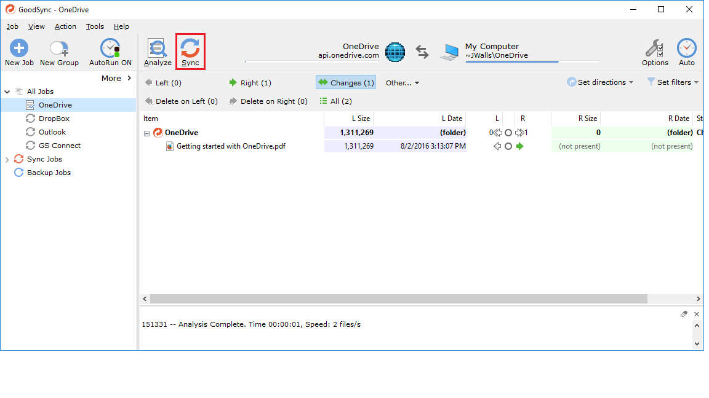
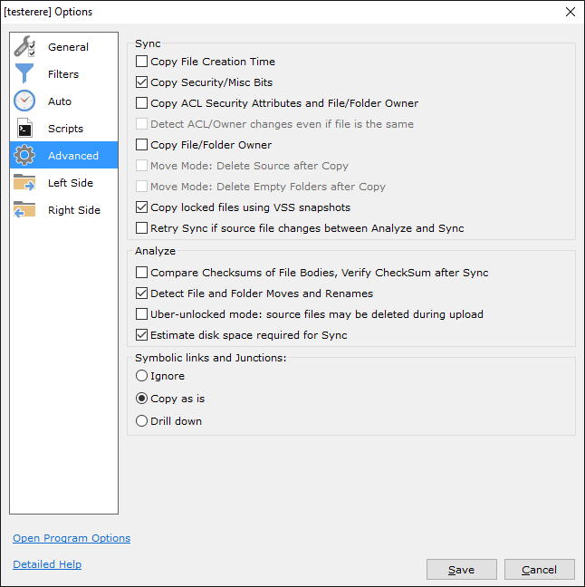

GoodSync 藏着这 5 个没人讲透的功能，用完才知道什么叫专业级同步
你以为它只是个文件夹同步工具？其实 GoodSync 在 NAT 穿透、端到端加密、块级传输上藏着一堆官方不怎么宣传的黑科技，今天把它们挖出来。
我翻了 GoodSync 的菜单翻了快三年，说出来你可能不信——GoodSync官网上宣传得很克制，这玩意儿表面上就是个"选左边文件夹、选右边文件夹、点一下同步"的简单工具，但菜单一层层展开之后，藏着好几个让我这种折腾党拍大腿的特性。很多人用它同步个桌面文件夹就完了，根本不知道这些偏门入口能解决多大的问题。

1. GSTP 点对点：没公网 IP 也能跨局域网直连
你有没有过这种情况：家里电脑存着照片，公司电脑存着文档，想同步一下——但两台机器各在各的 NAT 后面，没有公网 IP，端口映射又搞不定？大多数同步工具遇到这个场景就只能退而求其次，把数据先传到云端再拉回来，白白浪费带宽还把隐私交出去了。
GoodSync 的解法是自家的 GSTP 点对点协议。在两台机器上各自从官方下载装 GoodSync，注册一个 GoodSync Connect 账号，然后互相添加对方的设备 ID——就这么简单。中间走的是 Mediator 协调服务器帮忙打洞，打不通的时候还有 Forwarder 中继兜底，但一旦连上就是 P2P 直连，数据不经过任何第三方中转。
这个功能藏得真深。它不是独立的"连接"功能，而是嵌在端点配置里的——当你选 GoodSync Connect 作为端点类型时，它自动就在背后干活了。很多人甚至没注意到自己正在用它。
2. 端到端 AES-256 加密：密钥自管，云服务商也看不到
如果你同步的是机密文件——财务报表、合同扫描件、未发布的设计稿——单纯靠传输层的 TLS 加密是不够的。GoodSync 在应用层额外提供了一层 AES-256 加密，覆盖两个层面：传输过程中的每一个数据包，以及如果目标是 GoodSync Storage 云存储的话，服务器端落地的文件本身也是加密的。
关键在于密钥是你自己设的，GoodSync 不保存。首次启用加密时输入密码，它用 PBKDF2 算法派生出对称密钥，之后两端自动加解密。换电脑也不怕——把密钥文件复制过去就行，具体迁移步骤可以去GoodSync文档翻一下密钥管理的章节。
但有一个坑必须提：密码丢了就彻底找不回来。这是真正的"端到端"——连 GoodSync 官方都帮不了你。我见过有人加密完存了一堆文件，半年后换了个同步方案，回来发现密码早忘了，几百 G 的数据直接报废。启用前务必把密钥文件备份好，或者干脆记在密码管理器里。
3. 块级传输：大文件只传变更的那几 KB
普通同步工具遇到大文件变更（比如虚拟机镜像从 50GB 变成 50.1GB），会老老实实地重传整个文件。GoodSync 不一样——它做了块级差异比对，只传输真正变动的数据块。
这个优化在视频剪辑师那里是刚需：一个 20GB 的剪辑工程文件，改了开头的一个字幕，普通工具可能要传十几分钟，GoodSync 几秒钟就搞定了。我测试过在两块 NAS 之间同步一个 80GB 的 VDI 文件，修改了末尾几 KB 后重传，GoodSync 显示只传了 4KB 就完成了。
这个特性默认开启，你甚至感觉不到它存在。但当你同步的文件动辄几十上百 GB 时，差距就是"喝一杯咖啡"和"等一集电视剧"。
4. VSS 锁定文件复制：Outlook 的 PST 也能备份
Windows 上有一类文件特别麻烦——被其他程序打开、锁住了，普通备份工具拿它一点办法都没有。最典型的就是 Outlook 的 PST 数据文件：只要 Outlook 在运行，它就独占打开，任何拷贝操作都会报"文件被占用"。
GoodSync 在 Windows 上调用了卷影复制服务（VSS）——这是 Windows 内置的快照机制，可以在文件被占用时拍一个瞬间快照，然后从快照里读取数据。整个过程用户完全无感知，Outlook 正常运行、你正常同步，互不干扰。
这个功能也是默认开启的，藏在引擎深处。只有当你真的遇到"某个文件总是备份失败"的时候，才会偶然发现 GoodSync 居然能绕过这个限制。
5. _gsdata_ 状态目录：同步出问题的终极解法
每个同步端点下，GoodSync 都会偷偷建一个 _gsdata_ 目录，里面存着它对文件状态的追踪数据。正常情况下你完全不需要管它，但当同步出现诡异问题时——比如明明没改文件却被判定为变更、或者某些文件总是同步失败——这个目录就是关键。
GoodSync 的解决方式是 Clear State：在作业设置里点一下，它清空内部状态文件，然后强制做一次全量重新分析。绝大多数同步异常到这一步就能解决，比卸载重装好用多了。
但千万不要手动删除 _gsdata_ 目录里的 _state/ 子目录。我见过有人以为那是垃圾文件删了，结果下次同步 GoodSync 把所有文件都判定为"新文件"，两端同时创建重复副本，收拾了一整天才理干净。

最后说一句
这五个特性里，GSTP 穿透和 VSS 锁定文件这两个是 GoodSync 的独门武器——其他同步工具要么不做，要么做得没它彻底。端到端加密和块级传输虽然不算独家，但 GoodSync 的实现细节（密钥自管、并行块传输）还是比大多数竞品更成熟。
把它用透的人都知道，GoodSync 不是给小白"同步个文件夹"用的——它是给那种"我有一堆东西要在好几个地方安全、可靠、悄无声息地保持一致"的人准备的工具。菜单深是深了点，但每一层都有东西。
这套资料我顺手同步到了三个代码仓库：GitHub 上有完整的历史版本，国内访问直接去Gitee 或GitCode 就行，不用挂代理。